Birds on Bikes IV
A fourth collection of 20 birds and their favorite bicycles. All artwork created with Claude Code using ✨ Claude Fable 5 ✨.
Generate 20 SVGs of various waterfowl riding various bicycles.
For each SVG:
- Choose a type of bird, and a specific style of bicycle.
- Create an SVG illustrating the bird on the bicycle.
- save using filename: fowl-{i}.svg
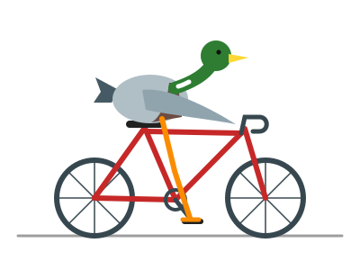
Mallard Drake · Road Bike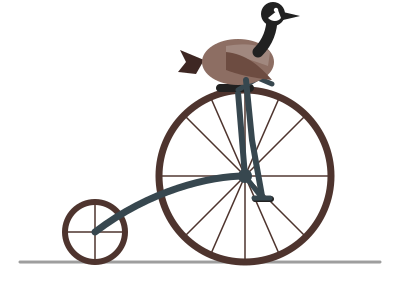
Canada Goose · Penny-Farthing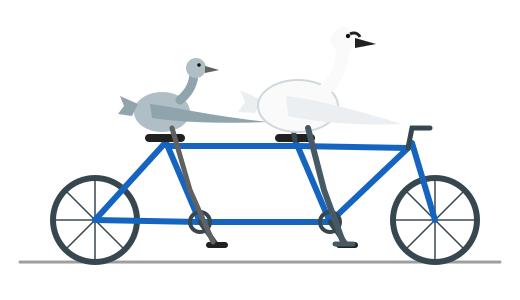
Trumpeter Swan & Cygnet · Tandem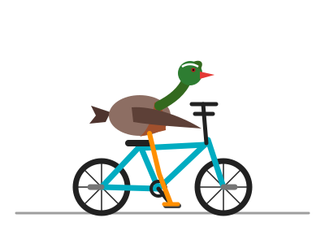
Wood Duck · BMX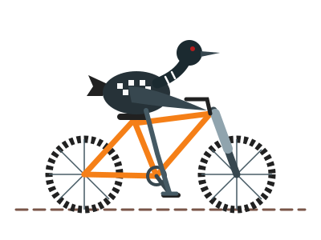
Common Loon · Mountain Bike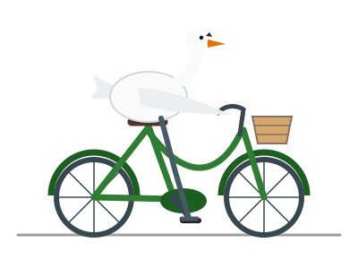
Mute Swan · Dutch City Bike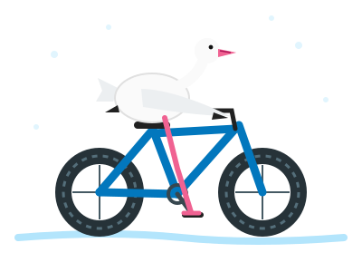
Snow Goose · Fat Bike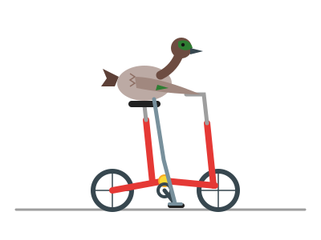
Green-winged Teal · Folding Bike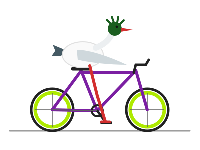
Common Merganser · Fixie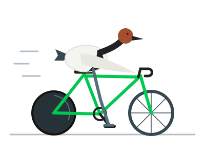
Canvasback · Track Bike with Disc Wheel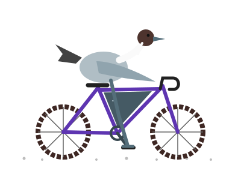
Northern Pintail · Gravel Bike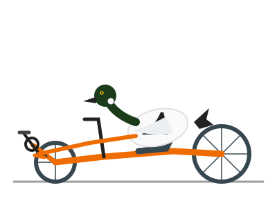
Common Goldeneye · Recumbent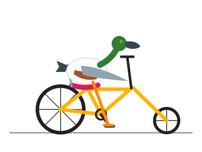
Northern Shoveler · Chopper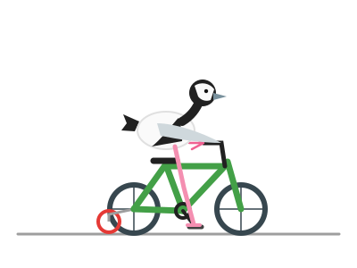
Bufflehead · Kids Bike with Training Wheels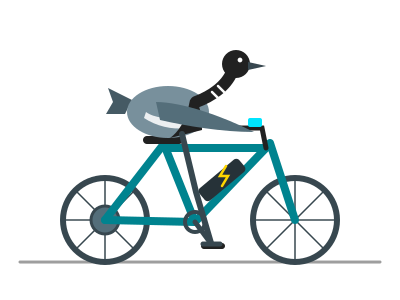
Brant Goose · E-Bike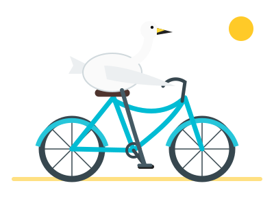
Whooper Swan · Beach Cruiser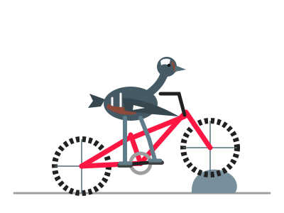
Harlequin Duck · Trials Bike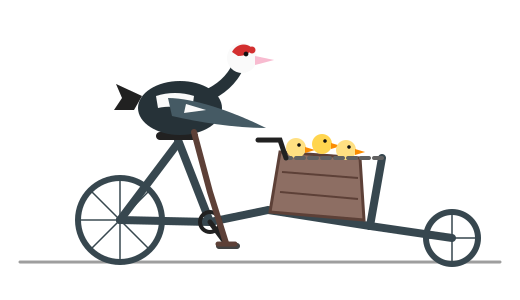
Muscovy Duck · Cargo Bike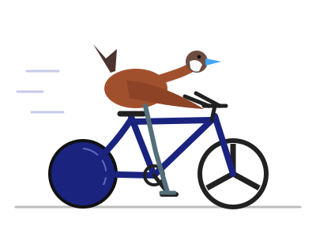
Ruddy Duck · Time-Trial Bike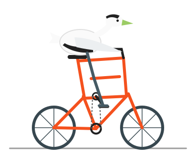
Common Eider · Tall Bike